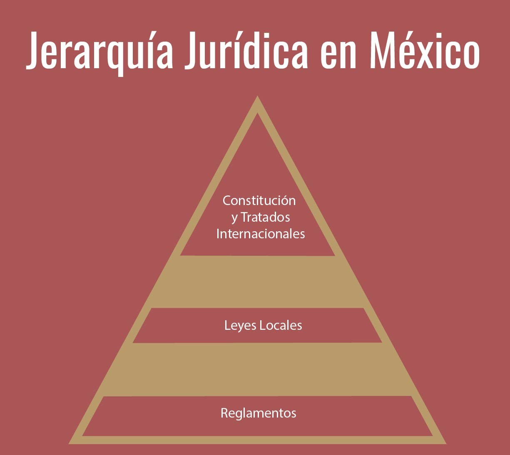

Jerarquía del orden jurídico
La jerarquía en el Derecho es un principio jurídico que establece que las normas jurídicas se ordenen mediante un sistema de prioridad, según el cual unas normas tienen preferencia sobre otras. Este principio es fundamental para garantizar la unidad y coherencia del ordenamiento jurídico, así como para evitar conflictos entre normas de distinto rango.
El principio de jerarquía normativa implica que una norma de rango inferior no puede contradecir ni vulnerar lo que establezca una de rango superior. Esto significa que las normas de rango inferior deben estar conformes con las normas de rango superior.
Es importante señalar que las normas jurídicas pueden clasificarse de varias maneras. Por ejemplo, se pueden clasificar según su contenido, su ámbito de aplicación o su forma de creación.

Según su contenido, las normas jurídicas pueden ser:
- Normas jurídicas de carácter público: regulan las relaciones entre el Estado y los particulares.
- Normas jurídicas de carácter privado: regulan las relaciones entre particulares.
Según su ámbito de aplicación, las normas jurídicas pueden ser:
- Normas jurídicas generales: se aplican a todos los ciudadanos.
- Normas jurídicas especiales: se aplican a un grupo determinado de personas o a una materia específica.
Según su forma de creación, las normas jurídicas pueden ser:
- Normas jurídicas escritas: se encuentran en un documento oficial, como una ley o un reglamento.
- Normas jurídicas consuetudinarias: se forman por el uso y la práctica constante.
Dentro de las principales jerarquías del orden jurídico del Derecho encontramos las siguientes normas:
La Constitución. Es la norma suprema del ordenamiento jurídico, establece los principios fundamentales del Estado y los derechos de los ciudadanos. La Constitución es la base de todo el ordenamiento jurídico y todas las demás normas jurídicas deben estar conformes a ella.
Los Tratados Internacionales. Son acuerdos entre Estados, se integran al ordenamiento jurídico interno y tienen el mismo rango que las leyes federales.
Las Leyes Federales. Son normas aprobadas por el Congreso de la Unión, regulan materias de interés general, como la seguridad pública, la educación y la salud.
Las Leyes Ordinarias. Son normas aprobadas por el Congreso de la Unión o por los congresos estatales, regulan materias específicas, como el derecho civil, el derecho penal y el derecho fiscal.
Los Decretos. Son normas emitidas por el presidente de la República, regulan materias de interés público, como la seguridad nacional y la política exterior.
Los Reglamentos. Son normas emitidas por el poder ejecutivo para dar cumplimiento a una ley.
Imagen de Hpav7, Wikimedia Commons.
Normas jurídicas individualizadas
Aunque para algunos autores no se consideran normas jurídicas es importante mencionarlas ya que forman parte de este sistema de prioridad, estas normas incluyen:
Sentencia judicial. Son las sentencias emitidas por un tribunal en un caso específico. Establecen derechos y obligaciones para las partes involucradas y pueden servir para marcar un precedente en un caso futuro.
Contrato. Son acuerdos o convenios entre dos o más personas que crean, modifican o extinguen derechos y obligaciones.
Testamento. Es la declaración oficial de la última voluntad de una persona, hecha con los requisitos y formalidades que define la Ley. Un acto independiente por el que una persona dispone de sus bienes para después de su muerte.
Sentencia. Son decisiones judiciales que resuelven un conflicto entre dos o más partes.
Resolución administrativa. Son decisiones de los órganos administrativos que resuelven un asunto concreto entre particulares y el Estado.
Jerarquía Jurídica
A continuación realiza el siguiente ejercicio.
Normas Jurídicas vs. Normas Sociales
Para que reflexiones en torno a los contenidos expuestos, te invitamos a participar en el siguiente foro.